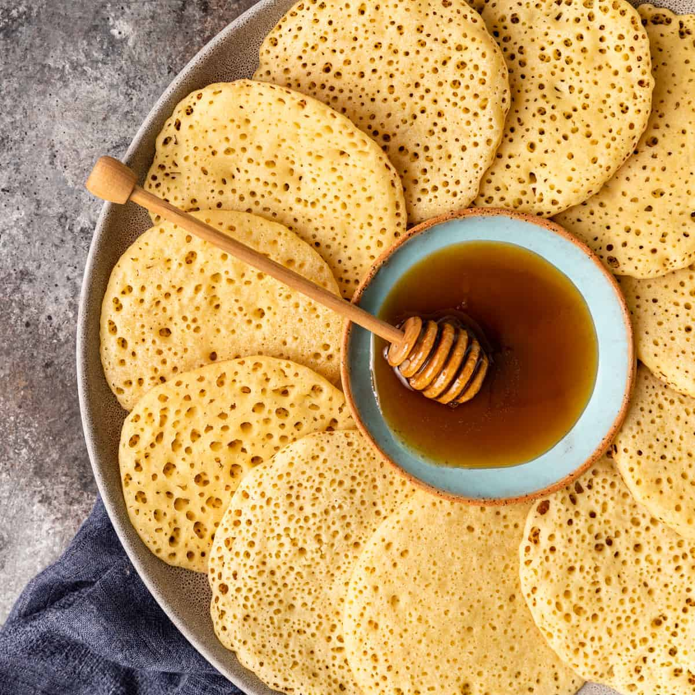

Baghrir

Description
Beghrir are tender, spongy, melt-in-your-mouth Moroccan pancakes made from semolina.
Yeast in the crepe-like batter causes hundreds of bubbles to form and break on the surface
of each pancake as it cooks. This gives beghrir its unique texture and appearance.
Although beghrir are normally cooked only on one side, in some regions of Morocco,
they are flipped over for just a moment to help dry out the top.
Prepared this way, they might be referred to as khringos, although in Casablanca that term
is the name for tiny fritter-like Moroccan churros.
Beghrir are easy to make, but in order for the bubbles to form properly, the batter must be
the right consistency. If the batter is too thick, the bubbles can't form. Use the conventional
measures or a tall drinking glass to measure ingredients. It might also be helpful to refer to
the tips at the end of the recipe.
Leftover beghrir are best stored in freezer, with a small piece of plastic wrap
or wax paper between each pancake.
Ingredients
- 1 1/2 cups fine semolina or durum flour
- 3/4 cup all-purpose flour
- 1 teaspoon kosher salt
- 1 teaspoon sugar
- 2 teaspoons baking powder
- 3 cups plus 2 tablespoons lukewarm water
- 1 tablespoon yeast
Steps
Make the batter
- Mix semolina, flour, salt, sugar, and baking powder in a mixing bowl.
- In a blender, measure lukewarm water to just over the 3-cup line.
Add yeast and process on low speed to blend. Gradually add dry ingredients.
- Increase processing speed and blend for a full minute or until very smooth and creamy.
The batter should be thin, about the same consistency as crepe batter.
- Pour batter into a bowl. Cover with plastic wrap and let rest for 10 minutes or a bit longer,
until top of batter is light and a bit foamy.
Cook the baghrir
- Heat a small non-stick skillet over medium heat. Stir batter and use a ladle to pour batter
into hot skillet. Pour carefully and slowly into center, and batter will spread evenly
into a circle. (Do not swirl pan as you would for a crepe; the batter should spread itself.)
Make beghrir as large as you like.
- Bubbles should appear on the surface of beghrir as it cooks. Don't flip beghrir.
It only gets cooked on one side.
- Cook for about two minutes or until beghrir doesn't appear wet anywhere on the surface.
It should feel spongy, but not sticky or gummy when you touch it lightly.
- Transfer beghrir to cool in a single layer on a clean kitchen towel.
Once cooled, they can be stacked without sticking.
- Repeat with remaining batter. Serve plain with toppings on the side or dip pancakes in hot syrup.